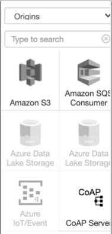

Install Additional Stage Libraries
Install additional stage libraries to use stages that are not included in the core or common installation of Data Collector. This is an optional step, but core installations typically require installing additional stage libraries.
For a complete list of the stages installed with each stage library, see Available Stage Libraries.
You can install additional RPM stage libraries using the Data Collector command line program.
You can install additional tarball stage libraries using the Package Manager within Data Collector, using the stage library panel in the pipeline canvas, or using the Data Collector command line program.
An installation with Cloudera Manager is a full installation that includes all available stage libraries. As a result, you cannot install or uninstall additional stage libraries in a Cloudera Manager installation.
When necessary, you can also install enterprise stage libraries and legacy stage libraries for all installation types.
Installing for RPM
Use the following commands to install additional stage libraries for a core RPM installation:
- To install one or more stage libraries:
- Use the following command to install the stage libraries downloaded to the current directory:
- To list the stage libraries installed on the current Data Collector:
- Use the following
command:
yum list installed | grep streamsets - To uninstall libraries when necessary:
- Use the following
command:
yum remove <libraryID> <libraryID> ...
Installing for Tarball Using Package Manager
You can use Package Manager within Data Collector to install additional stage libraries for a core or common tarball installation.
Complete one of the following steps to display Package Manager:
-
Click the Package Manager icon
 .
. - Click Add/Remove Stages in the Stage Library panel when viewing a pipeline in the pipeline canvas.
Package Manager lists all available stage libraries and the stages within each stage library. Origins display in blue, processors in orange, destinations in light green, and executors in dark green. Installed stage libraries display a check mark in the Installed column. You can filter the stage libraries by type or you can search for a stage library in the list.

To install an additional stage library, click the More icon for
the library, and then click Install. Or to install multiple stage
libraries, select the libraries in the list and then click the
Install icon  . Confirm that you want to install the libraries,
and then restart Data Collector for
the changes to take effect.
. Confirm that you want to install the libraries,
and then restart Data Collector for
the changes to take effect.
For information about the stages installed with each stage library, see Available Stage Libraries.
Installing for Tarball Using the Stage Library Panel
You can use the stage library panel in the pipeline canvas to install additional stage libraries for a core or common tarball installation.
By default, the stage library panel in the pipeline canvas displays all Data Collector stages, instead of only the installed stages. Stages that are not installed appear disabled, or greyed out. For example, the stage library panel shown below indicates that the Azure origins are not installed:

To install an additional stage library, click on a disabled stage. Confirm that you want to install the library, and then restart Data Collector for the changes to take effect.
When needed, you can configure Data Collector to hide the stages that are not installed in the stage library panel, as described in Configuring the Display.
For information about the stages installed with each stage library, see Available Stage Libraries.
Installing for Tarball Using the Command Line
You can
use the stagelibs command to install additional stage libraries for a
core or common tarball
installation.
The stagelibs command requires that curl version 7.18.1 or later and
sha1sum utilities are installed on the machine. Verify that these utilities are
installed before running the command.
- To view the list of available libraries:
- Run the following command from the
$SDC_DISTdirectory:bin/streamsets stagelibs -list - To install one or more stage libraries:
- Run the following command from the
$SDC_DISTdirectory:bin/streamsets stagelibs -install=<libraryID>,<libraryID>,... - To generate the command required to perform the current installation (optional):
- You can use the
stagelibscommand to generate the command to install the libraries that are installed on the current Data Collector. This allows you to easily replicate the installation elsewhere. - To uninstall libraries when necessary:
- To uninstall a library, run the following command from the
$SDC_DISTdirectory:bin/streamsets stagelibs -uninstall=<libraryID>,<libraryID>,...
Available Stage Libraries
A full Data Collector installation includes all of the following stage libraries. A core installation includes only some of the following stage libraries and typically requires you to install additional stage libraries. A common installation includes commonly-used stage libraries.
You can install additional stage libraries into either a core or common installation.
| Stage Library Name | Included Stages |
|---|---|
| streamsets-datacollector-aerospike-lib | For Aerospike version 3.15. Includes the Aerospike destination. |
| streamsets-datacollector-apache-kafka_1_0-lib | For Kafka version 1.0.x. Includes:
|
| streamsets-datacollector-apache-kafka_1_1-lib | For Kafka version 1.1.x. Includes:
|
| streamsets-datacollector-apache-kafka_2_0-lib | For Kafka version 2.0.x. Includes:
|
| streamsets-datacollector-apache-kudu_1_3-lib | For Kudu version 1.3.x. Includes the Kudu Lookup processor and Kudu destination. |
| streamsets-datacollector-apache-kudu_1_4-lib | For Kudu version 1.4.x. Includes the Kudu Lookup processor and Kudu destination. |
| streamsets-datacollector-apache-kudu_1_5-lib | For Kudu version 1.5.x. Includes the Kudu Lookup processor and Kudu destination. |
| streamsets-datacollector-apache-kudu_1_6-lib | For Kudu version 1.6.x. Includes the Kudu Lookup processor and Kudu destination. |
| streamsets-datacollector-apache-kudu_1_7-lib | For Kudu version 1.7.x. Includes the Kudu Lookup processor and Kudu destination. |
| streamsets-datacollector-apache-pulsar_2-lib | For Apache Pulsar version 2.x. Includes the Pulsar Consumer origin and the Pulsar Producer destination. |
| streamsets-datacollector-apache-solr_6_1_0-lib | For Apache Solr version 6.1. Includes the Solr destination. |
| streamsets-datacollector-aws-lib | For Amazon Web Services 1.11. Includes:
|
| streamsets-datacollector-aws-secrets-manager-credentialstore-lib | For the AWS Secrets Manager credential store system. |
| streamsets-datacollector-azure-keyvault-credentialstore-lib | For the Microsoft Azure Key Vault credential store system. |
| streamsets-datacollector-azure-lib | For Microsoft Azure. Includes:
|
| streamsets-datacollector-basic-lib |
Includes the following origins:
Includes the following processors:
Includes the following destinations:
Includes the following executors:
|
| streamsets-datacollector-bigtable-lib | For Google Cloud Bigtable. Includes the Google Bigtable destination. |
| streamsets-datacollector-cassandra_3-lib | For Cassandra 1.2, 2.x, and 3.x. Includes the Cassandra destination. |
| streamsets-datacollector-cdh_5_14-lib | For the Cloudera CDH version 5.14 distribution of Apache Hadoop.
Includes:
|
| streamsets-datacollector-cdh_5_15-lib | For the Cloudera CDH version 5.15 distribution of Apache Hadoop.
Includes:
|
| streamsets-datacollector-cdh_5_16-lib | For the Cloudera CDH version 5.16 distribution of Apache Hadoop.
Includes:
|
| streamsets-datacollector-cdh_6_0-lib | For the Cloudera CDH version 6.0.x distribution of Apache Hadoop.
Includes:
|
| streamsets-datacollector-cdh_6_1-lib | For the Cloudera CDH version 6.1 distribution of Apache Hadoop.
Includes:
|
| streamsets-datacollector-cdh_6_2-lib | For the Cloudera CDH version 6.2 distribution of Apache Hadoop.
Includes:
|
| streamsets-datacollector-cdh_6_3-lib | For the Cloudera CDH version 6.3 distribution of Apache Hadoop.
Includes:
|
| streamsets-datacollector-cdh_kafka_3_1-lib | For the Cloudera distribution of Apache Kafka - CDK 3.1.0 (based
on Apache Kafka version 1.0.1). Includes:
|
| streamsets-datacollector-cdh_kafka_4_1-lib | For the Cloudera distribution of Apache Kafka - CDK 4.1.0 (based
on Apache Kafka version 2.2.1). Includes:
|
| streamsets-datacollector-cdh_spark_2_1_r1-lib | For the Cloudera distribution of Spark 2.1 release 1.
Includes:
|
| streamsets-datacollector-cdh_spark_2_2-lib | For the Cloudera CDH cluster Kafka with CDS powered by Spark 2.2
release 1. Includes the Kafka Consumer origin for cluster mode pipelines. |
| streamsets-datacollector-cdh_spark_2_3-lib | For the Cloudera CDH cluster Kafka with CDS powered by Spark 2.3
release 2. Includes the Kafka Consumer origin for cluster mode pipelines. |
| streamsets-datacollector-cdh_spark_2_3_r3-lib | For the Cloudera CDH cluster Kafka with CDS powered by Spark 2.3
release 3. Includes the Kafka Consumer origin for cluster mode pipelines. |
| streamsets-datacollector-cdh_spark_2_3_r4-lib | For the Cloudera CDH cluster Kafka with CDS powered by Spark 2.3
release 4. Includes the Kafka Consumer origin for cluster mode pipelines. |
| streamsets-datacollector-couchbase_5-lib | For Couchbase. Includes:
|
| streamsets-datacollector-crypto-lib | For cryptography stages. Includes the Encrypt and Decrypt Fields processor. |
| streamsets-datacollector-cyberark-credentialstore-lib | For the CyberArk credential store system. |
| streamsets-datacollector-databricks-ml_2-lib | For Databricks ML. Includes the Databricks ML Evaluator processor. |
| streamsets-datacollector-dataformats-lib |
Contains parsers and generators for the data formats supported by Data Collector. |
| streamsets-datacollector-dev-lib | For developing and testing pipelines. Includes:
Note: Do not use these stages in production pipelines.
|
| streamsets-datacollector-elasticsearch_5-lib | For Elasticsearch 1.x, 2.x, and 5.x. Includes the Elasticsearch origin and destination. |
| streamsets-datacollector-elasticsearch_6-lib | For Elasticsearch 6.x. Includes the Elasticsearch origin and destination. |
| streamsets-datacollector-elasticsearch_7-lib | For Elasticsearch 7.x. Includes the Elasticsearch origin and destination. |
| streamsets-datacollector-emr_hadoop_2_8_3-lib | For Amazon EMR 5.14.x with Hadoop 2.8.3. Includes the Hadoop FS origin for cluster mode pipelines. |
| streamsets-datacollector-google-cloud-lib | For Google Cloud. Includes:
|
| streamsets-datacollector-groovy_2_4-lib | For Groovy version 2.4. Includes:
|
| streamsets-datacollector-hdp_3_1-lib | For Hortonworks version 3.1. Includes:
|
| streamsets-datacollector-influxdb_0_9-lib | For InfluxDB version 0.9 or greater. Includes the InfluxDB destination. |
| streamsets-datacollector-jdbc-lib | For JDBC access to databases. Includes:
|
| streamsets-datacollector-jdbc-sap-hana-lib | For JDBC access to SAP HANA databases. Includes the SAP HANA Query Consumer origin. |
| streamsets-datacollector-jks-credentialstore-lib | For the Java keystore credential store system. |
| streamsets-datacollector-jms-lib | For Java Messaging Services (JMS). Includes the JMS Consumer origin and JMS Producer destination. |
| streamsets-datacollector-jython_2_7-lib | For Jython version 2.7.x. Includes:
|
| streamsets-datacollector-kinesis-lib | For Amazon Kinesis. Includes:
|
| streamsets-datacollector-kinetica_6_0-lib | For Kinetica 6.0. Includes the KineticaDB destination. |
| streamsets-datacollector-kinetica_6_1-lib | For Kinetica 6.1. Includes the KineticaDB destination. |
| streamsets-datacollector-kinetica_6_2-lib | For Kinetica 6.2. Includes the KineticaDB destination. |
| streamsets-datacollector-kinetica_7_0-lib | For Kinetica 7.0. Includes the KineticaDB destination. |
| streamsets-datacollector-mapr_6_0-lib | For MapR version 6.0 and 6.0.1. Includes:
|
| streamsets-datacollector-mapr_6_1-lib | For MapR version 6.1. Includes:
|
| streamsets-datacollector-mapr_6_0-mep4-lib | For MapR 6.0, MapR Ecosystem Pack (MEP) version 4.
Includes:
|
| streamsets-datacollector-mapr_6_0-mep5-lib | For MapR 6.0.1, MapR Ecosystem Pack (MEP) version 5.
Includes:
|
| streamsets-datacollector-mapr_6_1-mep6-lib | For MapR 6.1.0, MapR Ecosystem Pack (MEP) version 6.
Includes:
|
| streamsets-datacollector-mleap-lib | For MLeap. Includes the MLeap Evaluator processor. |
| streamsets-datacollector-mongodb_3-lib | For MongoDB 3.0 with Java driver 3.5.0. Includes:
|
| streamsets-datacollector-mongodb_4-lib | For MongoDB 4.0 with Java driver 3.12.0. Includes:
|
| streamsets-datacollector-mysql-binlog-lib | For MySQL binary logs. Includes the MySQL Binary Log origin. |
| streamsets-datacollector-omniture-lib | For Omniture. Includes the Omniture origin. |
| streamsets-datacollector-orchestrator-lib | For the orchestration stages. Includes:
|
| streamsets-datacollector-rabbitmq-lib | For RabbitMQ version 3.5.6. Includes the RabbitMQ Consumer origin and RabbitMQ Producer destination. |
| streamsets-datacollector-redis-lib | For Redis versions 2.8 and 3.0. Includes:
|
| streamsets-datacollector-salesforce-lib |
For Salesforce. Includes:
|
| streamsets-datacollector-stats-lib |
StreamSets Control Hub requires that the statistics stage library be installed on each registered Data Collector. |
| streamsets-datacollector-tensorflow-lib | For TensorFlow. Includes the TensorFlow Evaluator processor. |
| streamsets-datacollector-thycotic-credentialstore-lib | For the Thycotic Secret Server credential store system. |
| streamsets-datacollector-vault-credentialstore-lib | For the Hashicorp Vault credential store system. |
| streamsets-datacollector-wholefile-transformer-lib | Includes the Whole File Transformer processor. |
| streamsets-datacollector-windows-lib |
For Windows. Includes the Windows Event Log origin. |
Enterprise Stage Libraries
Be sure to install a valid version of the stage libraries for the Data Collector version that you are using.
You can install Enterprise stage libraries using Package Manager for a tarball Data Collector installation or as custom stage libraries for a tarball, RPM, or Cloudera Manager Data Collector installation.
For installation instructions, the list of supported versions, and other prerequisite tasks, see the documentation for the individual stages, listed below.
The release notes for Enterprise stage libraries are available on the StreamSets Documentation page.
| Stage Library | Stage Library Name | Description |
|---|---|---|
| Azure Synapse | streamsets-datacollector-azure-synapse-lib | For Azure Synapse. Includes the Azure Synapse SQL destination. For version information, see Supported Versions for the Azure Synapse stage library. |
| Databricks | streamsets-datacollector-databricks-lib | For Databricks. Includes the Databricks Delta Lake destination and the Databricks Query executor. For version information, see Supported Versions for the Databricks stage library. |
| GPSS | streamsets-datacollector-greenplum-lib | For Greenplum. Includes the GPSS Producer destination. For version information, see Supported Versions for the GPSS stage library. |
| MemSQL | streamsets-datacollector-memsql-lib | For MemSQL. Includes the MemSQL Fast Loader destination. For version information, see Supported Versions for the MemSQL stage library. |
| Oracle | streamsets-datacollector-oracle-lib | For bulk loading from Oracle tables. Includes the Oracle Bulkload origin. For version information, see Supported Versions for the Oracle stage library. |
| Protector | streamsets-datacollector-protector-lib | For protecting sensitive data. Includes a set of Protector stages. For a full list, see the Protector release notes. |
| Snowflake | streamsets-datacollector-snowflake-lib | For Snowflake. Includes the Snowflake destination. For version information, see Supported Versions for the Snowflake stage library. |
| Microsoft SQL Server 2019 Big Data Cluster | streamsets-datacollector-sql-server-bdc-lib | For SQL Server 2019 Big Data Cluster. Includes the SQL Server 2019 BDC Multitable Consumer origin and the SQL Server 2019 BDC Bulk Loader destination. For version information, see Supported Versions for the SQL Server 2019 Big Data Cluster stage library. |
| Teradata | streamsets-datacollector-teradata-lib | For Teradata. Includes the Teradata Consumer origin. For version information, see Supported Versions for the Teradata stage library. |
Legacy Stage Libraries
Legacy stage libraries are older stage libraries that have been removed from Data Collector. Though we strongly advise using the stage libraries provided with Data Collector, and upgrading related systems, you can continue to use these legacy libraries when necessary.
For steps for upgrading pipelines that use legacy libraries to current stage libraries, see Update Pipelines using Legacy Stage Libraries.
- Tarball installations
- Install legacy stage libraries with Package Manager. Follow the instructions in Installing for Tarball Using Package Manager. You can click Legacy Stage Libraries to filter the list of stage libraries, showing only legacy libraries.
- RPM package or Cloudera Manager installations
- Install legacy stage libraries manually:
- Download the legacy libraries:
- Go to the StreamSets archives page and navigate to the release that you are using.
- Click the "Legacy" link and download the legacy libraries that you want to use.
- Install and manage the legacy libraries as you would custom stage libraries. For more information, see Custom Stage Libraries.
- Download the legacy libraries:
| Legacy Stage Library | Included Stages |
|---|---|
| streamsets-datacollector-apache-kafka_0_8_1-lib | For Kafka version 0.8.1. Includes:
|
| streamsets-datacollector-apache-kafka_0_8_2-lib | For Kafka version 0.8.2. Includes:
|
| streamsets-datacollector-apache-kafka_0_9-lib | For Kafka version 0.9.x. Includes:
|
| streamsets-datacollector-apache-kafka_0_10-lib | For Kafka version 0.10.x. Includes:
|
| streamsets-datacollector-apache-kafka_0_11-lib | For Kafka version 0.11.x. Includes:
|
| streamsets-datacollector-apache-kudu_1_0-lib | For Kudu version 1.0.x. Includes the Kudu Lookup processor and Kudu destination. |
| streamsets-datacollector-apache-kudu_1_1-lib | For Kudu version 1.1.x. Includes the Kudu Lookup processor and Kudu destination. |
| streamsets-datacollector-apache-kudu_1_2-lib | For Kudu version 1.2.x. Includes the Kudu Lookup processor and Kudu destination. |
| streamsets-datacollector-cdh_5_2-lib |
For the Cloudera CDH version 5.2 distribution of Apache Hadoop. Includes:
|
| streamsets-datacollector-cdh_5_3-lib |
For the Cloudera CDH version 5.3 distribution of Apache Hadoop. Includes:
|
| streamsets-datacollector-cdh_5_4-lib |
For the Cloudera CDH version 5.4 distribution of Apache Hadoop. Includes:
|
| streamsets-datacollector-cdh_5_5-lib |
For the Cloudera CDH version 5.5 distribution of Apache Hadoop. Includes:
|
| streamsets-datacollector-cdh_5_7-lib |
For the Cloudera CDH version 5.7 distribution of Apache Hadoop. Includes:
|
| streamsets-datacollector-cdh_5_8-lib |
For the Cloudera CDH version 5.8 distribution of Apache Hadoop. Includes:
|
| streamsets-datacollector-cdh_5_9-lib |
For the Cloudera CDH version 5.9 distribution of Apache Hadoop. Includes:
|
| streamsets-datacollector-cdh_5_10-lib |
For the Cloudera CDH version 5.10 distribution of Apache Hadoop. Includes:
|
| streamsets-datacollector-cdh_5_11-lib |
For the Cloudera CDH version 5.11 distribution of Apache Hadoop. Includes:
|
| streamsets-datacollector-cdh_5_12-lib |
For the Cloudera CDH version 5.12 distribution of Apache Hadoop. Includes:
|
| streamsets-datacollector-cdh_5_13-lib |
For the Cloudera CDH version 5.13 distribution of Apache Hadoop. Includes:
|
| streamsets-datacollector-cdh_kafka_1_2-lib | For the Cloudera distribution of Apache Kafka 1.2 (0.8.2.0).
Includes:
|
| streamsets-datacollector-cdh_kafka_1_3-lib | For the Cloudera distribution of Apache Kafka 1.3 (0.8.2.0).
Includes:
|
| streamsets-datacollector-cdh_kafka_2_0-lib | For the Cloudera distribution of Apache Kafka 2.0.x (0.9.0).
Includes:
|
| streamsets-datacollector-cdh_kafka_2_1-lib | For the Cloudera distribution of Apache Kafka 2.1.x (0.9.0).
Includes:
|
| streamsets-datacollector-cdh_kafka_3_0-lib | For the Cloudera distribution of Apache Kafka 3.0.0
(0.11.0). Includes:
|
| streamsets-datacollector-cdh_spark_2_1-lib | For the Cloudera CDH cluster Kafka with CDS powered by Spark 2.1.
Includes the Kafka Consumer origin for cluster mode pipelines. |
| streamsets-datacollector-hdp_2_2-lib | For the Hortonworks version 2.2 distribution of Apache Hadoop.
Includes:
|
| streamsets-datacollector-hdp_2_3-lib | For the Hortonworks version 2.3 distribution of Apache Hadoop.
Includes:
|
| streamsets-datacollector-hdp_2_3-hive1-lib | The Hortonworks version 2.3.x distribution of Apache Hive 1.x.
Includes:
|
| streamsets-datacollector-hdp_2_4-lib | For the Hortonworks version 2.4 distribution of Apache Hadoop.
Includes:
|
| streamsets-datacollector-hdp_2_4-hive1-lib | For the Hortonworks version 2.4.x distribution of Apache Hive
version 1.x. Includes:
|
| streamsets-datacollector-hdp_2_5-lib | For the Hortonworks version 2.5.x distribution of Apache Hadoop.
Includes:
|
| streamsets-datacollector-hdp_2_5-flume-lib | For the Hortonworks version 2.5.x distribution of Apache
Flume. Includes the Flume destination. |
| streamsets-datacollector-hdp_2_6-lib | For the Hortonworks version 2.6.x distribution of Apache Hadoop.
Includes:
|
| streamsets-datacollector-hdp_2_6-flume-lib | For the Hortonworks version 2.6.x distribution of Apache
Flume. Includes the Flume destination. |
| streamsets-datacollector-hdp_2_6-hive2-lib | For the Hortonworks version 2.6.x distribution of Apache Hive
version 2.1. Includes:
|
| streamsets-datacollector-hdp_2_6_1-hive1-lib | For the Hortonworks version 2.6.1 distribution of Apache Hive
version 1.x. Includes:
|
| streamsets-datacollector-hdp_2_6_2-hive1-lib | For the Hortonworks version 2.6.2 distribution of Apache Hive
version 1.x. Includes:
|